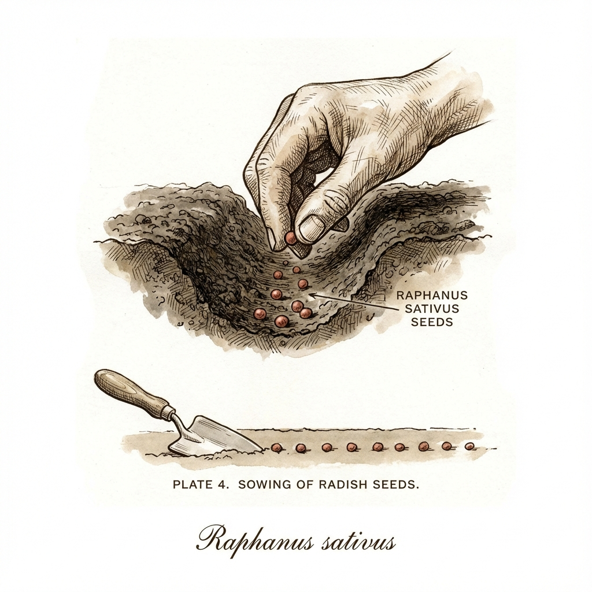

🔴'">
Radieschen
Raphanus sativus var. sativus
⏱️ Ernte
3-4 Wochen - Das schnellste Gemüse!
📋 Anleitung
- Aussaat: Direkt ins Beet, 1cm tief, 3cm Abstand
- Wann: März-September, alle 2 Wochen nachsäen
- Pflege: Feucht halten, nicht zu dicht
💡 Tipps
Auch auf Balkon in Töpfen! Blätter essbar als Salat.